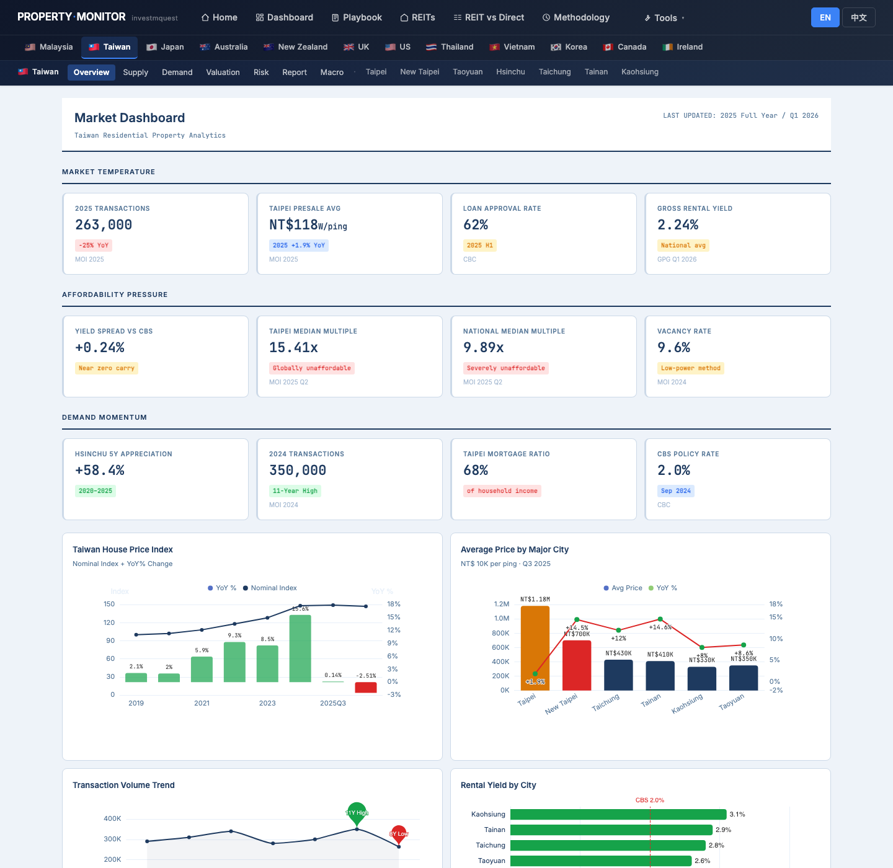
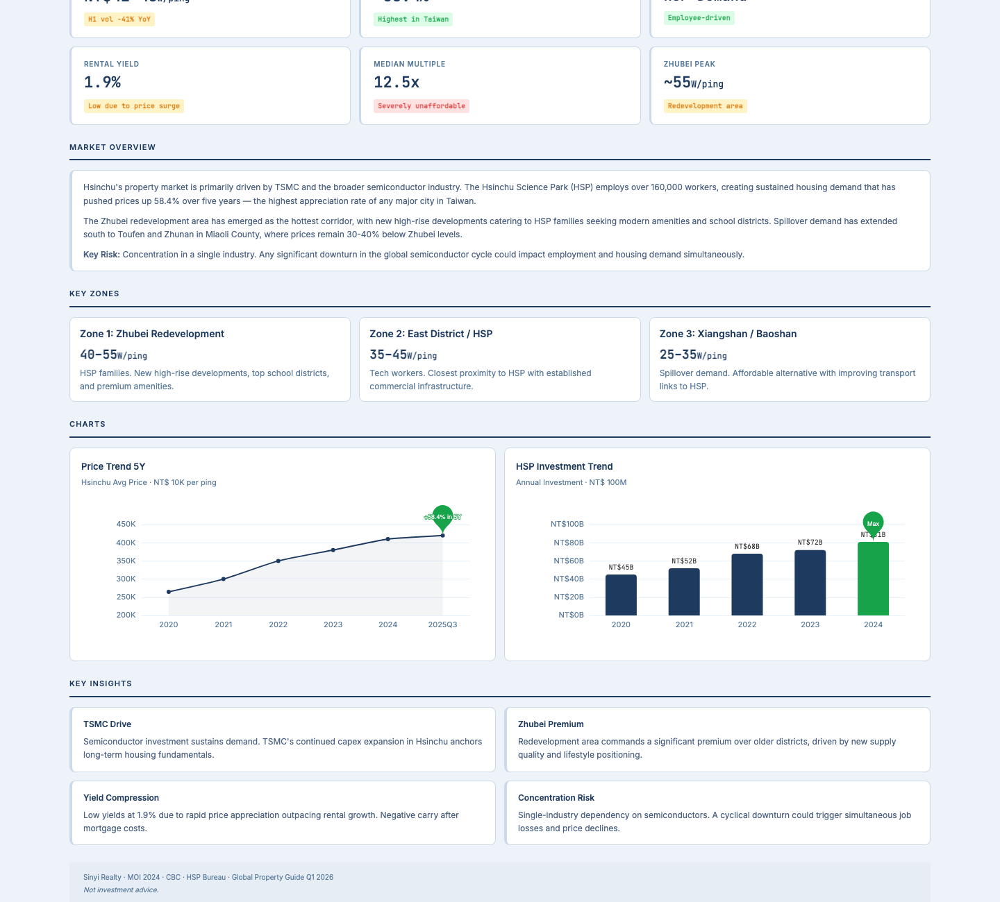
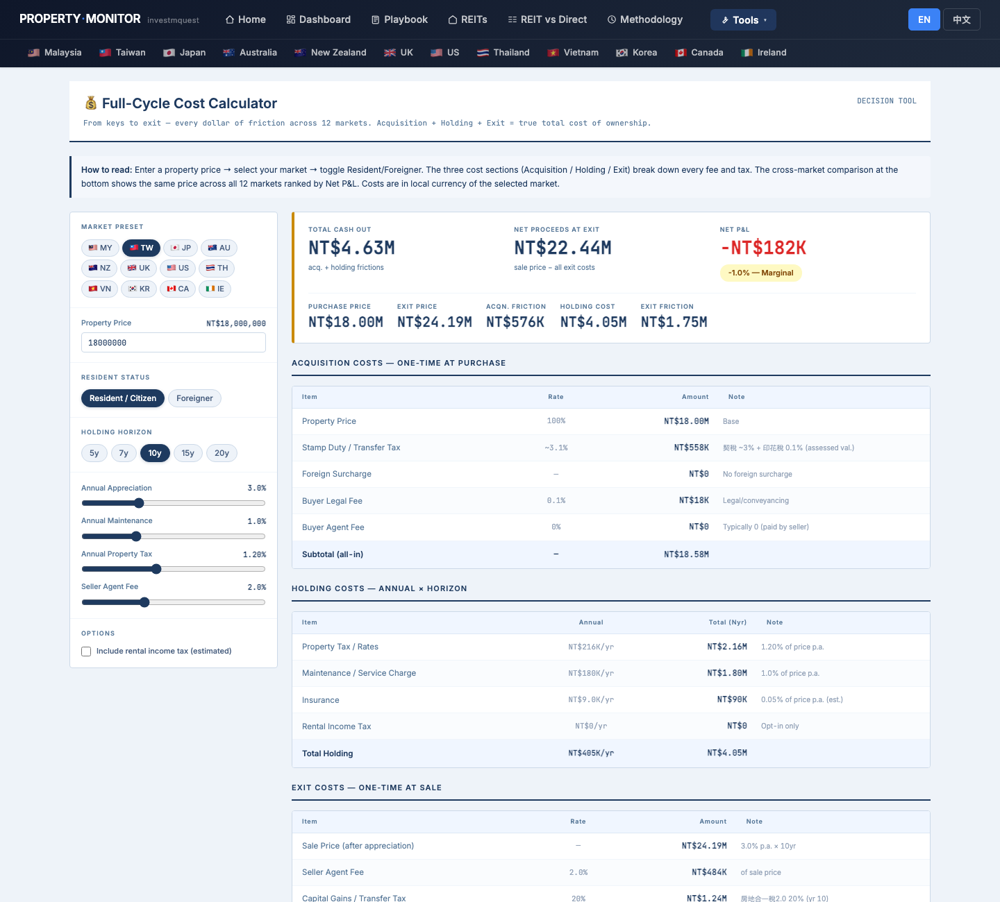
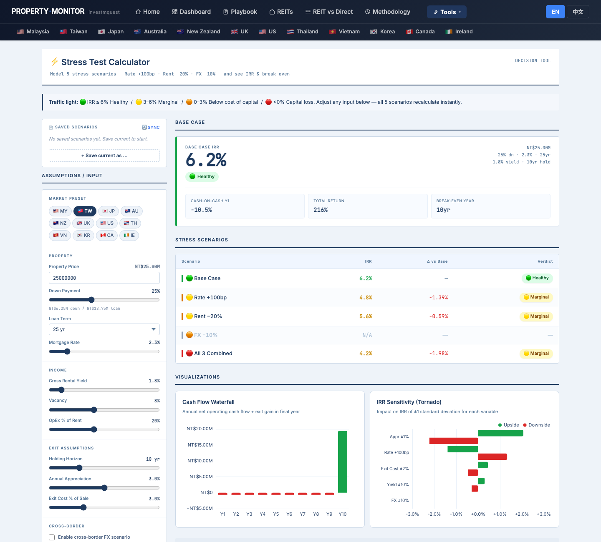

Ms. Wang (28, Hsinchu, TSMC engineer) has NT$3M saved plus NT$2M from her parents as a gift — NT$5M total down payment. She wants to mortgage 70–80% LTV to reach a total purchase price in the NT$15–20M range. Her shortlist: Hsinchu (live near work), Taoyuan (cheaper + MRT commute), Taipei (lifestyle, but stretched budget). She's a first-time buyer with no prior property experience. This walkthrough shows you which page to open first, what to click, what each chart means, and where to find each function — using Ms. Wang's questions as the lens. It is not investment advice, tax advice, or property recommendations. 王小姐，28 歲，新竹台積電工程師，自有存款 NT$300 萬加父母贈與 NT$200 萬，頭期款共 NT$500 萬。她打算貸款七至八成，目標總價約 NT$1,500–2,000 萬。她的三選一城市：新竹（在公司附近住）、桃園（單價較低 + 捷運通勤）、台北（生活機能好但預算拉緊）。她是零經驗首購族。這份導覽用王小姐的問題當主軸，告訴你先打開哪一頁、點哪裡、每張圖代表什麼、各種功能藏在哪。本文不是投資建議、稅務建議或不動產推薦。
- Where on this site does Taiwan data live, and which city pages exist?台灣的資料藏在哪？網站上有哪些城市分頁？
- Where is the Taiwan analyst narrative — is now a good time to enter as a first-time buyer?在哪裡能讀到台灣市場的分析師敘述？現在是首購進場的好時機嗎？
- Hsinchu (live near work) vs Taoyuan (cheaper + MRT) vs Taipei (lifestyle) — how do I triage?新竹（鄰近公司）vs 桃園（單價低 + 捷運）vs 台北（生活機能）— 怎麼判斷選哪個？
- What's the supply pipeline for my chosen city — will prices soften in 2–3 years?我選的城市供給量怎麼樣？2–3 年後房價會軟化嗎？
- What does a NT$18M property actually cost over 10 years if I mortgage 75% LTV?如果我貸款七成五，一戶 NT$1,800 萬的物件 10 年的真實總成本是多少？
- Can I still afford the mortgage if CBC raises rates — where is the stress test?如果央行升息，我還負擔得起房貸嗎？壓力測試在哪裡？
- How do I switch the site to 中文? Where do I download a PDF?怎麼切換到中文？怎麼下載 PDF？
Ms. Wang's click-by-click tour — 12 stops王小姐的逐步點擊旅程 — 12 個停靠點
Each stop is a real page on the site. For each, you'll see what Ms. Wang clicks, what she sees on the screen, and how that screen relates to her first-home + mortgage situation. Follow along in another tab — every URL works. 每個停靠點都是站上的一頁實際畫面。每站告訴你王小姐點什麼、螢幕出現什麼、這個畫面跟她首購 + 貸款情境有什麼關係。建議另開分頁跟著走 — 所有連結都能直接點。
Land on the home page and pick the "I want growth" persona進入首頁，選「我要增值」persona 卡
What she sees on screen: the "I want growth" card lights up amber with a checkmark. Below the hero, a scatter chart titled "Carry × 10-year growth, every city plotted" reweights — the highlighted dots now emphasize cities with strong 10-year appreciation profiles. The accompanying quadrant guide shows her the upper-right cluster: high growth regardless of carry. 螢幕出現什麼：「我要增值」卡片變琥珀色亮起並打勾。Hero 下方的散點圖《利差 × 10 年漲幅，每城一點》重新排序 — 亮起的點集中在 10 年漲幅強勁的城市。旁邊的四象限說明顯示：右上角是「高成長不管利差如何」的城市群。

Use the world map — locate Taiwan cities on the global scatter用世界地圖 — 在全球散點圖上找到台灣城市
What she sees: dot color depth encodes the metric intensity — deeper teal = stronger 10-year growth for that city. Below the map, a "Top 5" strip ranks the best cities for her current metric, with ★ marking ones that match the growth persona. Taiwan cities with TSMC-driven demand show up prominently in the growth metric view. 螢幕出現什麼：點的顏色深度代表指標強度 — 越深綠代表該城市 10 年漲幅越強。地圖下方的 Top 5 清單列出當前指標的前五名城市，符合「增值」persona 的旁邊標 ★。受台積電需求驅動的台灣城市在增值指標視圖中顯眼排前。

Read the Taiwan long-form report — get the analyst narrative before the numbers先讀台灣長篇報告 — 看完分析師的故事再看數字
What she sees: a long-form research report broken into named sections — Executive Summary, Policy Impact (7th Credit Control), Supply, Aging Stock (老屋重建), Demand, Valuation, City chapters (Taipei, Taoyuan, Hsinchu, others), Outlook. The demand section notes that the 房地合一稅 2.0 reforms eliminated short-term speculative demand — the remaining buyers are mostly owner-occupiers, upgraders, and first-timers. A table of contents at the top lets her jump by section anchor. 螢幕出現什麼：長篇研究報告分成多個章節 — 執行摘要、政策衝擊（第七波信用管制）、供給面、老屋結構（有效淨增供給）、需求面、估值、城市章節（台北、桃園、新竹等）、展望。需求面章節指出，房地合一稅 2.0 改革已消除短線投機需求，目前的買家主要是自住首購、換屋及老屋替換需求 — 這是相對穩定的需求結構。頁面頂部有目錄，可直接用章節錨點跳轉。

Taiwan dashboard — three KPI grids read top-to-bottom台灣儀表板 — 三排 KPI 從上往下讀
What she sees — three KPI grids:
① MARKET TEMPERATURE — 2025 Transactions, Taipei Presale Avg, Loan Approval Rate, Gross Rental Yield (the macro pulse).
② AFFORDABILITY PRESSURE — Yield Spread vs CBS, Taipei Median Multiple (房價所得比), National Median Multiple, Vacancy Rate. This row is directly relevant to her: a high median multiple means buyers like Ms. Wang need more leverage.
③ DEMAND MOMENTUM — Hsinchu 5Y Appreciation, 2024 Transactions, Taipei Mortgage Ratio (房貸負擔率), CBS Policy Rate.
Below: six charts — Taiwan House Price Index, Average Price by Major City, Transaction Volume Trend, Rental Yield by City, Mortgage Burden Ratio trend, New Launches vs Transactions.
螢幕出現什麼 — 三排 KPI：
① 市場溫度 — 2025 年成交量、台北預售屋均價、房貸核准率、租金收益率（整體市場脈搏）。
② 負擔壓力 — 利差 vs CBS、台北房價所得比、全國房價所得比、空屋率。這排直接關係到她：房價所得比越高代表像王小姐這樣的買家需要越高的槓桿。
③ 需求動能 — 新竹 5 年漲幅、2024 年成交量、台北房貸負擔率、央行基準利率。
下方 6 張圖：台灣房價指數、六都均價比較、成交量趨勢、各城市租金收益率、房貸負擔率趨勢、新推案 vs 成交量。

Macro page — CBC rate cycle and mortgage rate trajectory總經頁 — 央行利率週期與房貸利率走勢
What she sees: a cycle timeline bar across the top showing Taiwan's rate eras. Below: 6 KPI cards — CBC Rate, House Price Index, CPI, GDP Growth, Mortgage Credit Growth, Population. Then dual-axis line charts for the monetary cycle vs property prices and the real economy vs property prices. Further down, key cycle event cards note specific policy milestones — CBC rate hike dates, credit control waves, and their effect on loan approval volumes. 螢幕出現什麼：最上方是台灣利率時代的週期時間軸。下方 6 張 KPI 卡 — CBC 利率、房價指數、CPI、GDP 成長、房貸成長、人口。接著是兩張雙軸折線圖（貨幣週期 vs 房價、實體經濟 vs 房價）。再往下是關鍵週期事件卡片，記錄央行升降息時點、信用管制波次及其對房貸核准量的影響。

City triage — Hsinchu vs Taoyuan vs Taipei, three tabs open side-by-side城市三選一 — 新竹 vs 桃園 vs 台北，三個分頁並排比較
Side-by-side comparison — what the site shows:
▸ Hsinchu — KEY METRICS shows: Hsinchu Avg Price, 5Y Appreciation, TSMC Effect KPI, Rental Yield, Median Multiple, Zhubei Peak. KEY ZONES break out Zhubei, Hsinchu City, and Hsinchu County submarkets. KEY INSIGHTS note the TSMC semiconductor cluster as a structural demand driver; also note that the Zhubei peak already reflects significant appreciation — new entries are buying at elevated levels.
▸ Taoyuan — KEY METRICS show: Pop Net Inflow, PIR, Avg Age, Unsold Inventory, Qingpu A18 Volume. Taoyuan report sections cover infrastructure (Airport MRT, new metro lines), supply chapters (Qingpu presale contraction and new inventory wave), and demographics (paper migration and micro-households). The TRANSACTION MARKET section covers buyer's market dynamics.
▸ Taipei — KEY METRICS show: Presale Avg Price, Housing Price Index, Rent Index, Avg LTV, Price-to-Income, 1-Person Households. Taipei sections include district price map by admin area, macro & policy framework, supply/presale contraction data, and demographics. Taipei also has an explicit DISTRICT PRICE MAP — 2026 Q1 showing price per ping across all admin districts.
三個分頁並排比較 — 網站顯示：
▸ 新竹 — KEY METRICS：新竹均價、5 年漲幅、台積電效應、租金收益率、房價所得比、竹北高點。KEY ZONES 細分竹北、新竹市、新竹縣次市場。KEY INSIGHTS 指出台積電半導體聚落是結構性需求驅動力；同時指出竹北高點已反映大幅漲價 — 現在進場是以高位買入。
▸ 桃園 — KEY METRICS：人口淨遷入、房價所得比、平均年齡、餘屋庫存、青埔 A18 成交量。桃園報告章節涵蓋基礎建設（機場捷運、新捷運線）、供給（青埔預售市場收縮與新屋供給浪潮）、人口結構（帳面遷徙與一人家戶崛起）。成交市場章節涵蓋買方市場動態。
▸ 台北 — KEY METRICS：預售屋均價、住宅價格指數、住宅租金指數、平均房貸成數、房價所得比、一人家戶佔比。台北章節含各行政區房價地圖、總體政策框架、供給與預售市場收縮、人口結構。台北還有明確的 2026 Q1 各行政區每坪均價地圖。

Deep dive into the chosen city — Hsinchu (or Taoyuan) — find the KEY ZONES and supply charts深入選定城市 — 新竹（或桃園）— 找 KEY ZONES 和供給圖
What she sees (Hsinchu example):
▸ KEY ZONES cards — three zone micro-cards: Zhubei (竹北, tech workers, closest to HSP, highest per-ping prices), Hsinchu City (竹市, established commercial areas, mid-tier pricing), Hsinchu County (新竹縣, suburban, more affordability). Each card shows the zone's key characteristic and buyer profile.
▸ Price Trend 5Y chart — 5-year line showing Hsinchu's appreciation trajectory. The shape of the curve tells her if growth was front-loaded (peaked already) or if it's continuing.
▸ HSP Investment Trend chart — Taiwan Science Park (竹科) capital expenditure trend; higher investment = more TSMC employees hired = more housing demand downstream.
▸ KEY INSIGHTS — insight boxes note the TSMC demand driver, new supply pipeline status, and any supply risk from upcoming project completions.
螢幕出現什麼（以新竹為例）：
▸ KEY ZONES 卡片 — 三張次區域 micro 卡：竹北（科技工作者、最鄰近竹科、最高單坪均價）、新竹市（商業區、中段定價）、新竹縣（郊區、較佳負擔能力）。每張卡顯示該區域的主要特徵與買家輪廓。
▸ 5 年房價趨勢圖 — 新竹升值軌跡的 5 年折線圖。曲線形狀告訴她成長是否前重後輕（已見頂），還是還在持續。
▸ 竹科投資趨勢圖 — 台灣科學園區資本支出趨勢；投資越高 = 台積電聘人越多 = 下游住房需求越大。
▸ KEY INSIGHTS — 洞察框說明台積電需求驅動力、新供給管線狀態，以及即將完工案量帶來的供給風險。

Valuation page — affordability metrics and P/R ratio for her city估值頁 — 負擔能力指標和 P/R 比
What she sees — 6 KPI cards:
① Taipei P/R Ratio (租金比 — price divided by annual rent, shows how many years of rent to buy)
② National PIR (全國房價所得比 — price / annual income)
③ Taipei PIR (台北房價所得比)
④ Taipei Gross Yield (台北毛租金回報率)
⑤ CPI Rent YoY (租金年增率)
⑥ Yield Spread vs CBC (利差 vs 央行利率)
4 charts: PIR by City, Mortgage Burden Rate by City (%), Yield vs CBC Rate, National PIR Trend (historical).
Valuation Framework section: text interpretation of what the current PIR and P/R ratios imply about market positioning.
螢幕出現什麼 — 6 張 KPI 卡：
① 台北租金比（P/R Ratio）（房價 ÷ 年租金，等於幾年租金才夠買一戶）
② 全國房價所得比（National PIR）
③ 台北房價所得比（Taipei PIR）
④ 台北毛租金回報率（Taipei Gross Yield）
⑤ CPI 租金年增率
⑥ 利差 vs 央行利率（Yield Spread vs CBC）
4 張圖表：各城市房價所得比、各城市房貸負擔率（%）、租金回報率 vs 央行利率、全國 PIR 歷史趨勢。
估值框架章節：對現行 PIR 和 P/R 比的文字解讀，說明市場定位含義。

Cost Calculator — what does NT$18M actually cost over 10 years end-to-end?成本計算機 — NT$1,800 萬含取得、持有、退場 10 年總成本是多少？
What she sees:
Hero KPI: TOTAL CASH OUT / NET PROCEEDS AT EXIT / NET P&L verdict (Net Positive / Marginal / Net Loss >5%).
① Acquisition table — includes 契稅 (deed tax, ~3% of assessed value for secondary market), registration fees, buyer agent fee. No foreign surcharge row (she's a resident).
② Holding table — 房屋稅 (house tax ~1.2% on assessed value for primary residence), 地價稅 (land value tax), maintenance, insurance — shown annually and cumulatively over 10 years.
③ Exit table — seller agent fee, 房地合一稅 (CGT): 45% if held <2yr, 35% at 2–5yr, 20% for self-occupied long hold ≥5yr — her 10-year hold and self-occupied status likely qualifies for the 20% self-occupancy rate if eligible.
Below: Cost Breakdown stacked bar chart, Annual Holding Cost line, and the 12-market comparison table at the bottom (her TW row highlighted).
螢幕出現什麼：
最上方 KPI：TOTAL CASH OUT（總現金流出）/ NET PROCEEDS AT EXIT（退出淨所得）/ NET P&L 判決（淨正／邊緣／淨虧 > 5%）。
① Acquisition（取得成本）表 — 含契稅（約為公告現值的 6%，市場慣例約等於成交價 3%）、登記費、仲介費。無外國人附加稅欄（她是本國居民）。
② Holding（持有成本）表 — 房屋稅（自用住宅約 1.2% 課稅現值）、地價稅、維護費、保險 — 顯示每年費用及 10 年累計。
③ Exit（退出成本）表 — 仲介費、房地合一稅（CGT）：持有未滿 2 年 45%、2–5 年 35%、自住長持 ≥5 年 20% — 她 10 年持有且自住，很可能符合 20% 自住稅率資格（如符合條件）。
下方：成本結構堆疊長條圖、年度持有成本折線圖，以及底部的 12 市場比較表（她的 TW 那一列高亮）。

Stress Test — "can I still pay the mortgage if CBC raises rates by 1%?"壓力測試 — 「如果央行升息 1%，我還能繳得起房貸嗎？」
What she sees:
▸ A Base Scenario dashboard card showing IRR, break-even year, and monthly cash flows for the base TW mortgage rate assumption.
▸ 5 stress scenario cards — color coded traffic-light style:
🟢 Base Case (current rate)
🟡 Rate +100bp (CBC raises 1%) — calculates new monthly payment and revised IRR
🟡 Rent −20% (if she ever rents it out)
🟠 FX −10% (less relevant for a domestic buyer but shown)
🔴 All 3 Combined (worst-case)
▸ A sensitivity table showing IRR delta for Rate ±1%, Yield ±20%, and their combinations.
▸ The tool accepts: property price, down payment %, mortgage rate, term (years), yield, vacancy, horizon, appreciation, exit cost, FX rates.
螢幕出現什麼：
▸ 基本情境儀表板卡，顯示 IRR、回本年數、台灣房貸利率假設下的每月現金流。
▸ 5 個壓力情境卡片 — 交通燈顏色標示：
🟢 基本情境（現行利率）
🟡 利率 +100bp（央行升息 1%）— 計算新的月付金額與修正後 IRR
🟡 租金 −20%（如果她日後出租）
🟠 匯率 −10%（本國買家較不相關，仍顯示）
🔴 三者合併（最壞情境）
▸ 敏感度分析表顯示利率 ±1%、收益率 ±20% 及組合情境的 IRR 變動。
▸ 工具接受輸入：物件價格、頭期款比例、房貸利率、年期、租金收益率、空租率、持有期、增值率、退出成本、匯率。

Risk page — CBC credit controls, 房地合一稅 changes, and LTV caps風險頁 — 央行信用管制、房地合一稅變動、房貸成數上限
What she sees — 6 Risk KPI cards:
① 7th Wave Credit Controls — active / on hold / lifted status of the current LTV cap wave
② Bank Mortgage Concentration — what % of total bank lending is property-related; a proxy for systemic risk
③ Birth Rate — structural long-run demand risk for Taiwan
④ Delivery Wave (交屋潮) — volume of units scheduled for completion in near term
⑤ Vacancy — space overhang risk
⑥ Earthquake Risk — physical risk indicator for Taiwan
Charts: Risk Radar (hexagonal chart scoring 6 risk dimensions), Rate Sensitivity Analysis.
Policy Timeline: a chronological list of CBC policy actions — rate decisions, LTV cap waves, presale rule changes, 房地合一稅 amendments. This is the key document for understanding "what rules currently govern my mortgage."
Key Risk Factors section covers major narratives: credit control constraints, demographic headwinds, supply pipeline, earthquake structural risk.
螢幕出現什麼 — 6 張風險 KPI 卡：
① 第七波信用管制 — 現行 LTV 上限波次的狀態（生效／暫停／取消）
② 銀行房貸集中度 — 銀行放款中房貸佔多少比例；系統性風險的代理指標
③ 出生率 — 台灣長期結構性需求風險
④ 交屋潮（Delivery Wave） — 近期預定完工交屋的案量
⑤ 空屋率 — 供給過剩風險
⑥ 地震風險 — 台灣的物理風險指標
圖表：風險雷達圖（六邊形圖評分六個風險維度）、利率敏感度分析。
政策時間軸：CBC 政策行動的時間順序清單 — 利率決議、LTV 上限波次、預售屋規則變更、房地合一稅修正。這是理解「目前哪些規定管轄我的房貸」的關鍵文件。
主要風險因素章節涵蓋：信用管制限制、人口結構逆風、供給管線、地震結構風險。

Methodology — verify TW data sources and understand site limitations方法論頁 — 確認台灣資料來源，了解網站限制
What she sees: the methodology page documents the data sources, update frequency, and model assumptions used across all market pages. For Taiwan, the cost calculator sources note reference 房地合一稅 2.0 (2021–) and 契稅 Act. The page also clarifies model simplifications — for example, CGT calculations are simplified estimates and actual liability depends on individual tax position. 螢幕出現什麼：方法論頁記錄了所有市場頁面使用的資料來源、更新頻率和模型假設。台灣部分，成本計算機來源引用房地合一稅 2.0（2021 年起）和契稅法。頁面也說明了模型的簡化前提 — 例如，資本利得稅試算是估算值，實際稅負視個人稅務情況而異。

Quick reference — first-home + leverage cheat sheet速查表 — 首購 + 貸款重點整理
TW-specific taxes (resident, self-occupied)台灣稅費速查（本國居民、自住）
Acquisition: 契稅 ~3% of assessed value (secondary market). Registration fees ~0.1–0.3%. No foreign surcharge.
Holding (annual): 房屋稅 1.2% of assessed value (primary residence). 地價稅 tiered on land value.
Exit — 房地合一稅 (CGT): ≤2yr: 45% | 2–5yr: 35% | Self-occupied ≥5yr: 20% (if eligible) | Self-occupied ≥10yr: 15%.
取得：契稅約成交價 3%（中古屋，公告現值換算）。登記費 0.1–0.3%。無外國買家附加稅。
持有（每年）：房屋稅自住 1.2% 課稅現值。地價稅按土地公告地價累進。
退出 — 房地合一稅：≤2 年：45% ｜ 2–5 年：35% ｜ 自住 ≥5 年：20%（符合條件者）｜ 自住 ≥10 年：15%。
These are model estimates. Actual rates depend on assessed value ratio, property classification, and individual circumstances — consult a 會計師.以上為模型估算。實際稅率取決於課稅現值比例、物件分類與個人情況，請諮詢會計師。
LTV and mortgage realities (7th-wave rules)LTV 與貸款現況（第七波規定）
CBC 7th-wave credit controls (September 2024) cap LTV for:
• 1st home self-occupied: generally up to 70–80% (varies by region and bank)
• 2nd home / non-self-occupancy: capped lower (often 60% or less)
• Presale (預售屋): stricter limits under 7th-wave rules
Banks apply their own credit review on top of regulatory floors. Actual approved LTV depends on borrower income, property location, and bank policy — not just the regulatory ceiling.
央行第七波信用管制（2024 年 9 月）設定 LTV 上限：
• 首購自住：一般最高 70–80%（依地區與銀行有別）
• 第二戶或非自住：上限較低（常見 60% 以下）
• 預售屋：第七波設有更嚴格限制
銀行在法規底線之上有自己的信用審查。實際核准成數取決於借款人收入、物件地點和銀行政策，並非單純等於法規天花板。
Verify current caps with a licensed TW mortgage broker before assuming any LTV figure is achievable.請向有執照的台灣房貸仲介確認最新上限，不要假設任何 LTV 數字一定可行。
Parents' gift — 贈與稅 awareness父母贈與 — 贈與稅注意事項
Ms. Wang's NT$2M from parents is a gift. Under TW tax law, annual gift tax exemption is NT$244,000 per donor. For a NT$2M gift from both parents combined in a single year, the portion exceeding the exemption may be subject to 贈與稅 (gift tax, starting at 10%).
Proper documentation of the gift (e.g., bank transfer records, signed gift declaration) also affects the property's cost basis for future 房地合一稅 calculation.
王小姐從父母取得的 NT$200 萬是贈與。依台灣稅法，每人每年贈與稅免稅額為 NT$244,000。如果父母在同一年合計贈與 NT$200 萬，超過免稅額的部分可能須繳贈與稅（起徵稅率 10%）。
贈與的書面文件（如銀行匯款記錄、書面贈與聲明）也會影響未來計算房地合一稅時的取得成本認定。
Consult a TW family law lawyer and 會計師 before transferring funds to document the gift correctly and avoid surprise tax liabilities.在移轉資金前，請諮詢台灣家事律師及會計師，確保贈與文件完整，避免事後稅務意外。
Language toggle & PDF export語言切換與 PDF 匯出
Every page on the site has an EN / 中文 toggle button in the top navbar (right side, next to the rate badge). Click 中文 to switch all text on the current page. The preference is saved across sessions.
To save any page as a PDF: browser → Print (Ctrl+P / Cmd+P) → Save as PDF. The print stylesheet hides the navbar, language switcher, and action buttons — producing a clean document suitable for sharing with parents or a mortgage broker.
站上每一頁的 navbar 右側（匯率 badge 旁邊）都有 EN / 中文 切換按鈕。點 中文 即可切換當頁所有文字。設定會在各頁面間保存。
要把任何頁面存成 PDF：瀏覽器 → 列印（Ctrl+P / Cmd+P）→ 儲存為 PDF。列印版式會隱藏 navbar、語言切換、功能按鈕，輸出乾淨的文件，適合分享給父母或房貸顧問。
What this site answers vs. what you must outsource本站能回答什麼 vs. 必須外部諮詢什麼
Answered by this site本站可以回答
- TW data location and navigation台灣資料位置與導覽 — /tw/ market, 5 named city deep-dives (Taipei, New Taipei, Taoyuan, Hsinchu, Taichung)/tw/ 市場，5 個城市深度頁（台北、新北、桃園、新竹、台中）
- City triage logic for first-home首購城市三選一邏輯 — Hsinchu vs Taoyuan vs Taipei on price, PIR, burden rate, TSMC demand signal新竹 vs 桃園 vs 台北在均價、房價所得比、負擔率、台積電需求訊號上的比較
- Supply pipeline for chosen city選定城市的供給管線 — Delivery Wave KPI, city chart of New Launches vs Transactions交屋潮 KPI、新推案 vs 成交量圖
- All-cash cost ranges and tax structure全現金總成本範圍與稅費結構 — Cost Calculator: 契稅, 房屋稅, 地價稅, 房地合一稅 at 10y for a TW resident self-occupier成本計算機：本國居民自住 10 年期的契稅、房屋稅、地價稅、房地合一稅
- Mortgage rate sensitivity framework房貸利率敏感度框架 — Stress Test: CBC Rate +100bp scenario shows IRR delta and monthly payment impact at 75% LTV壓力測試：央行升息 +1% 情境，顯示 75% LTV 下 IRR 變動與月付金額影響
- CBC credit control history and policy timeline央行信用管制歷史與政策時間軸 — /tw/risk Policy Timeline documents each wave of LTV changes/tw/risk 政策時間軸記錄每一波 LTV 變動
- How to switch to 中文 and export PDF如何切換中文及匯出 PDF
Must outsource to professionals必須諮詢專業人士
- TW mortgage broker台灣房貸仲介／銀行 — current LTV caps, best available rate quote, special first-home government-backed programs (e.g. 青安貸款)最新 LTV 上限、最優利率報價、政府首購優惠方案（如青安貸款）
- TW 會計師 / 稅務代理台灣會計師 / 稅務代理 — exact 房屋稅, 地價稅, 房地合一稅 calculation for her specific property, 贈與稅 planning for parents' NT$2M gift針對她物件的確切房屋稅、地價稅、房地合一稅試算；父母 NT$200 萬贈與的贈與稅規劃
- Real estate agent in chosen city選定城市的房仲 — actual listings in budget range, neighborhood walks, recent comparable transactions (實價登錄)預算範圍內的實際案源、帶看社區、近期實價登錄成交比較
- Property inspector (建物狀況調查)不動產估價師 / 建物檢查 — structural integrity verification, aging building risk, water and electrical systems — especially important in TW given earthquake risk結構安全確認、老屋風險、水電系統 — 在台灣地震風險下格外重要
- Family lawyer (贈與稅 documentation)家事律師（贈與文件） — proper documentation of parents' NT$2M gift to establish cost basis and avoid 贈與稅 surprise確保父母 NT$200 萬贈與的書面文件完整，建立成本基礎、避免贈與稅意外
The site's best-supported call for Ms. Wang站上資料能支持的最佳選項 — 給王小姐
Not a personalized recommendation — a single, opinionated call assembled only from data this site already shows in SECTIONS 01–04.非個人化推薦 — 是從 SECTION 01–04 站上資料推導出的單一明確建議。
✓ Pre-commit checklist (from site data)✓ 進場前 checklist（站上資料能驗證的）
/tw/valuation.html: target submarket's price-to-income / rent ratio within historical band, not at top decile./tw/valuation.html：目標區段的房價/所得、房價/租金比仍在歷史區間，不在歷史前 10%。/tw/risk.html: CBC credit-control tier for target city/district not in DANGER (no fresh tightening planned)./tw/risk.html：央行對目標縣市/行政區的信用管制不在 DANGER（短期無新一輪緊縮）。- First-home Cost Calculator: monthly payment ≤ 35% of net income at stress-tested rate (+1.5% from current).首購 Cost Calculator：壓力測試（現行 +1.5%）後每月付款 ≤ 月收 35%。
- Pipeline Cliff for New Taipei MRT corridor: not in DANGER (excess presale in adjacent rezoning will not crash her area).新北捷運沿線 Pipeline Cliff 不在 DANGER（鄰近重劃區預售過剩不會打壞她的區段）。
- Methodology Taiwan row: every figure sourced from MOI 實價登錄 + CBC + DGBAS, not 591 / 信義 aggregator data.Methodology 台灣那列：每個數字都來自 MOI 實價登錄 + CBC + 主計處，非 591 / 信義聚合資料。
→ Off-site next steps (the site cannot answer)→ 走出站外的下一步（站上無法回答的）
- Multi-bank mortgage pre-approval (3 banks minimum) — first-home preferential rate, public servant / income-tier discount, LTV ceiling.多家銀行房貸預核（至少 3 家） — 首購優惠利率、公教/收入級別 discount、LTV 上限。
- Conveyancer / 地政士 — title check, property tax history, building registration vs actual use match.地政士 — 產權、房屋稅歷史、建物登記 vs 實際使用一致性。
- Building inspector — for 15–25 yr stock: pipes, structure, leakage history, fire safety compliance.建物檢查師 — 15-25 年屋齡：管線、結構、漏水史、消防合規。
- HOA / 管委會 records — sinking fund, recent special assessments, conflict history.管委會檔案 — 公積金、近期特別決議、糾紛史。
- Personal CPA — first-home deduction strategy, future rental conversion tax planning if life changes.個人會計師 — 首購扣抵策略、未來生活變動時的轉租稅務規劃。
A 1–2 bed second-hand near a New Taipei MRT station is the single call most consistent with the 12 stops for a first-buyer at 4:1 leverage. Taipei core and rezoning zones are priced out — and the site's calculators show why.新北捷運沿線的 1-2 bed 中古宅是 12 站走完後對「首購 + 4:1 槓桿」最一致的選項。台北市區與重劃區都過貴 — 站上試算工具會告訴她為什麼。